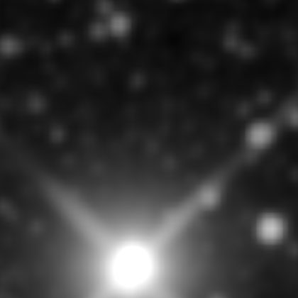
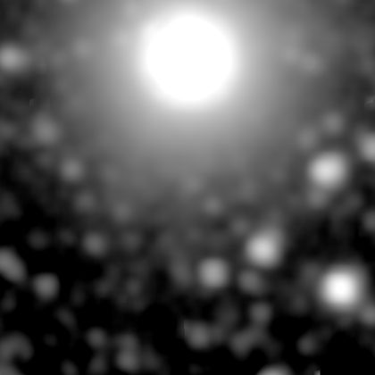
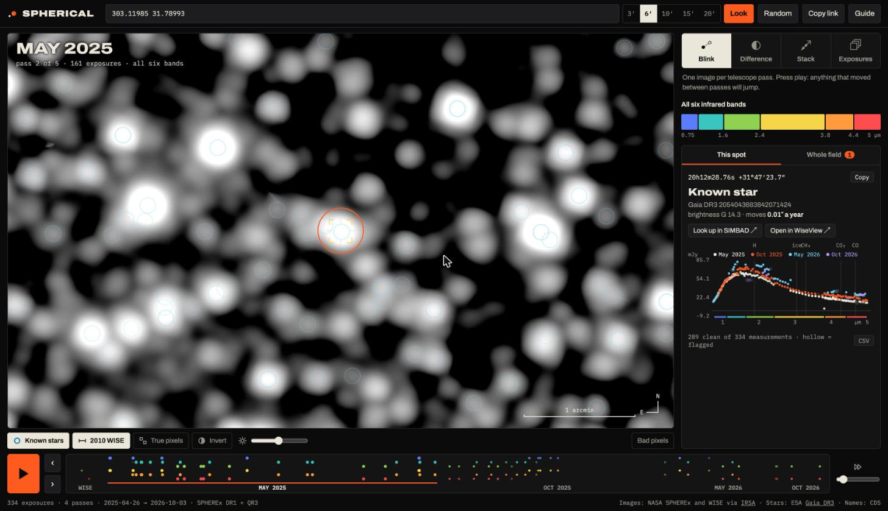
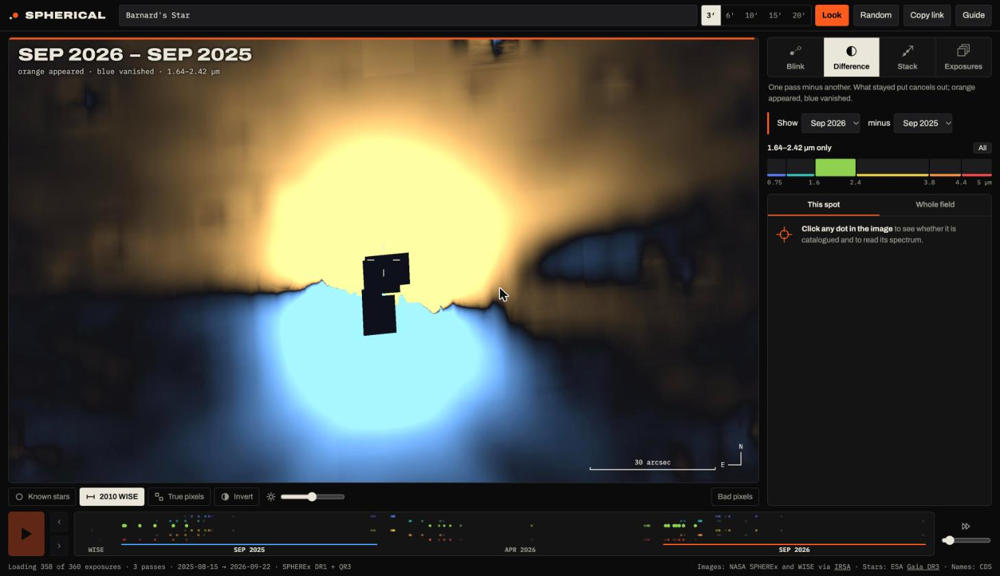
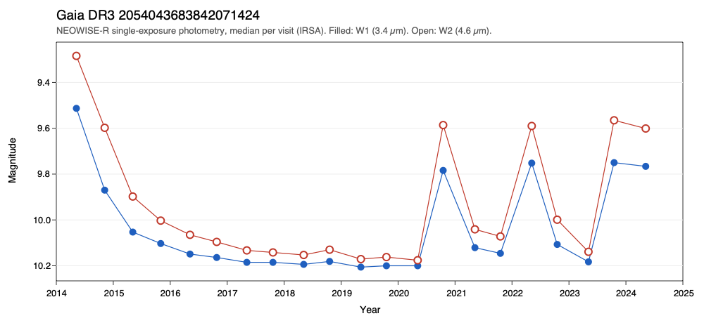

A public web tool that shows how any patch of sky changes between NASA SPHEREx images, so anyone can spot what moved or changed.


Barnard's Star in 2010 (WISE) and 2026 (SPHEREx). Real images.
Live diagram from the site (not to scale): SPHEREx scans one strip of sky per lap.

The tool, showing a star whose infrared glow grew over three SPHEREx passes.
No account, no download, no API key. New SPHEREx releases appear automatically. Built with plain HTML, CSS and JavaScript on Cloudflare.

Sep 2026 minus Sep 2025: Barnard's Star left the blue spot and arrived at the orange one. Black squares are pixels the telescope flagged as unusable.
Honest limits: no new moving object yet, the brown dwarf WISE 0855 is too faint for SPHEREx, and the 14 candidates still await outside confirmation.

One candidate, a hydrogen-emission star: quiet until 2020, then repeated infrared outbursts. SPHEREx caught a new one growing.
Not affiliated with or endorsed by NASA.